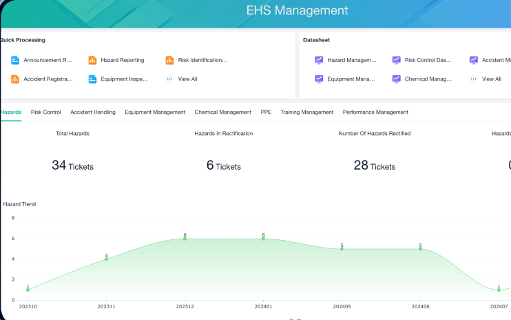
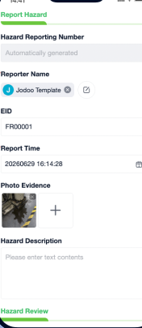
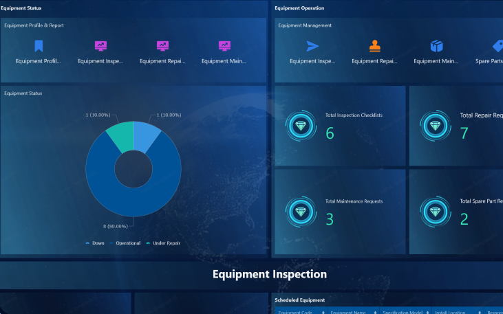
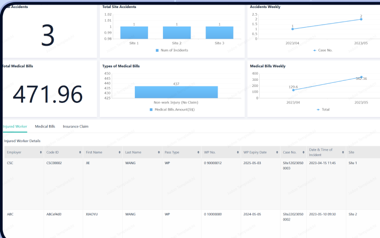

WSH hazard reporting & safety inspection app
See how one safety hazard gets reported — and closed.
A WSH hazard reporting and safety inspection app for Singapore SMEs. A worker spots a problem at 7.42am and reports it from a phone — follow it step by step, with the actual screens from the system. Every hazard, inspection and incident is logged with photo proof and a full audit trail, supporting your obligations under the Workplace Safety and Health (WSH) Act and MOM incident-reporting requirements.
Scenario 1 of 2 · one morning at a construction site




What you see: the hazard dashboard — every report, its owner and its status, in one place.
Real screens from the system. Sample data.